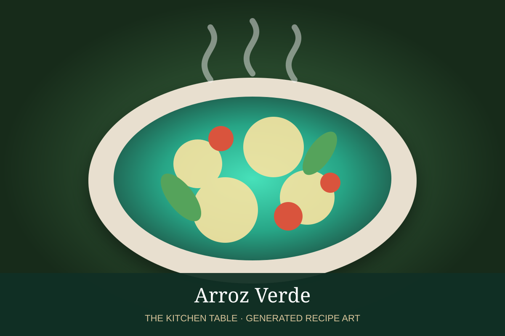

← Back to all recipes
RICE · MEXICAN
Arroz Verde
Green rice flavored with poblano, cilantro, parsley, jalapeño, onion, and garlic.
40 minServes 6

Photo: Eat the Gains
Ingredients
- 2 cups long-grain rice
- 2 poblano peppers, roasted and peeled
- 1 jalapeño
- 1 cup cilantro
- 1/2 cup parsley
- 1/4 onion
- 2 garlic cloves
- 3 cups chicken or vegetable broth
- 2 tbsp oil
- 1 1/2 tsp salt
Preparation
- Blend poblanos, jalapeño, cilantro, parsley, onion, garlic, and 1 cup broth.
- Toast rice in oil until lightly golden.
- Stir in green purée and cook 2 minutes.
- Add remaining broth and salt.
- Cover and simmer until rice is tender.
- Rest 10 minutes and fluff.